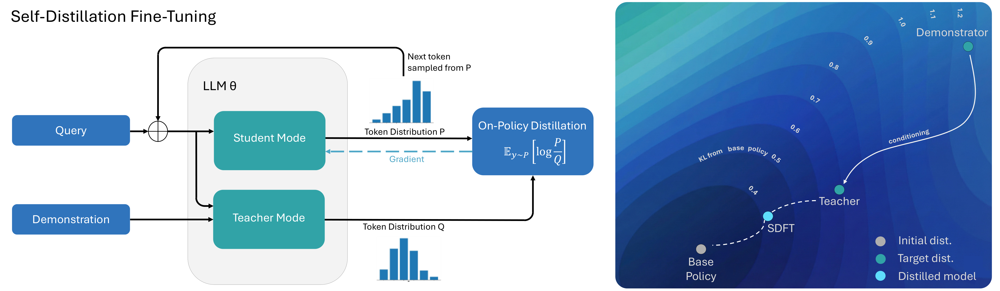
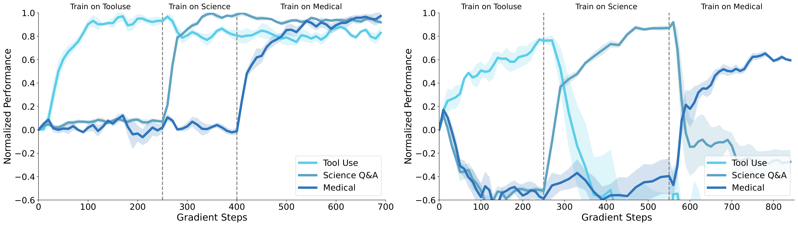
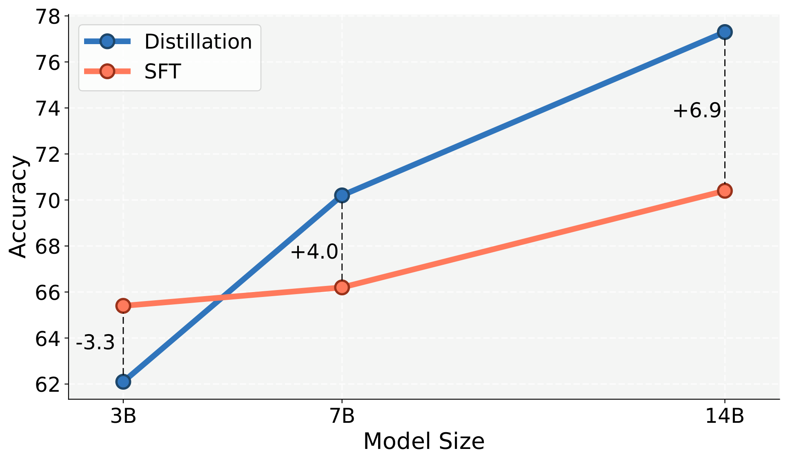

SDFT：自蒸馏让模型实现持续学习
Self-Distillation Enables Continual Learning (SDFT)
①开源贡献 Open-source Artifacts
论文在首页给出项目页 idanshenfeld.com/SDFT（重定向到 self-distillation.github.io/SDFT.html），声明「Code and Datasets are available」。解读日核实：代码仓库真实可访问，含基于 Hugging Face TRL 的 SDFT 训练实现与部分评测脚本，并附带 tool-use / science 两个任务的数据；medical、wiki 数据标注为后续补充。未见单独发布的模型权重或 Hugging Face 数据集页（实验全部基于公开的 Qwen2.5 / Olmo-3 与公开数据集构建）。仓库未声明明确的开源 license。
| 类型 | 是否开源 | 内容 / 链接 |
|---|---|---|
| 代码 Code | ✔ | github.com/idanshen/Self-Distillation — TRL 实现的 on-policy 自蒸馏 trainer（distil_trainer.py、main.py、distil_config.py）+ tool-use / science 评测脚本。README 含安装与训练/评测命令；未见 LICENSE 文件。 |
| 模型权重 Weights | ✘ | 未单独发布。base policy 用公开的 Qwen2.5-3B/7B/14B-Instruct、Olmo-3-7B-Think。 |
| 数据集 Dataset | ✔（部分） | 仓库 data 目录含 tool-use / science 数据；medical、wiki（2025 灾害知识库）标注为陆续补充。底层来源：ToolAlpaca、SciKnowEval、HuatuoGPT-o1、GPT-5 生成的 Wikipedia QA。 |
| 环境 / Benchmark | — | 无新建 benchmark；通用能力评测复用公开 LM Evaluation Harness（HellaSwag / MMLU / TruthfulQA / IFEval / Winogrande / HumanEval）。 |
| 项目主页 / Demo | ✔ | self-distillation.github.io/SDFT.html（含 paper + code 链接，无在线 demo）。 |
②研究动机与贡献 Motivation & Contribution
背景与问题
Foundation model 部署后基本是「静态」的：可以靠 retrieval / prompting 在 inference 时调整行为，却不会更新参数去真正习得新技能、内化新知识。要走向持续学习（continual learning），就得让模型在不断学新任务的同时不退化已有能力。近期一批工作发现关键在于 on-policy：当模型在「自己当前 policy 产生的数据」上训练时，catastrophic forgetting 远小于 off-policy。但目前成功的 on-policy 方法几乎都在 RL 框架里，依赖一个显式的 reward function——而现实里很多任务没有可用的 reward，只有专家 demonstration。
从 demonstration 学习的主流是 SFT：直接模仿一个固定的离线数据分布。简单可扩展，但本质是 off-policy。Ross et al. (2011) 早已指出 off-policy imitation 会有 compounding error——测试时 policy 一旦漂移到 demonstration 没覆盖的状态，误差迅速累积；在 continual learning 里更糟：顺序 SFT 会造成严重的 forgetting 与泛化退化。一个看似自然的出路是 IRL（先从 demonstration 反推 reward，再做 on-policy RL），但 IRL 通常需要很强的 reward 结构先验、难以扩展。
本文的切入点
作者的关键观察是：大模型有很强的 in-context learning 能力——只要把一条 demonstration 放进 context，它就能在不更新参数的情况下表现得像「学会了这个任务」。于是不必显式反推 reward：把「看到 demonstration 的自己」当作 teacher，把「只看到 query 的自己」当作 student，在 student 自己采样的轨迹上做 on-policy 蒸馏即可。论文用一个 In-Context Assumption 把这件事和 IRL 联系起来：demonstration-conditioned 的 policy $\pi(\cdot\mid x,c)$ 近似 trust-region 正则化 RL 的最优下一步 policy $\pi^*_{k+1}$，从而隐式定义了一个 reward。直觉上，这个 teacher 既能产生正确的新行为，又因为只是「在 context 里被点拨了一下」而始终锚定在 base model 附近，这正是少 forgetting 的关键。
核心贡献
- 提出 SDFT：一个用 demonstration-conditioned 自身当 teacher、在 on-policy 轨迹上做 reverse-KL 蒸馏的算法，实现「无需显式 reward、直接从 demonstration 做 on-policy 学习」。
- 给出理论联系：证明该自蒸馏目标等价于最大化一个由 demonstration 与模型 ICL 能力定义的隐式 reward（IRL 视角），并提出可经验验证的 In-Context Assumption（optimality + minimal deviation 两个条件）。
- 实证验证 teacher 质量：在 ToolAlpaca 上，conditioned teacher 把准确率从 42% 拉到 100%，同时与 base model 的 KL 仅 0.68 nats（SFT 模型为 1.26 nats，约一半）。
- 在 skill learning 与 knowledge acquisition 两类任务上，SDFT 在「新任务准确率」与「保留旧能力」两个维度上都取得更好的 Pareto trade-off；knowledge acquisition 的 OOD 准确率几乎追平 oracle RAG。
- 顺序连续学习：单个模型依次学 Tool Use → Science → Medical 三个技能，SDFT 能稳定累积而几乎不退化，SFT 则一学新任务旧任务即崩。
- 额外发现：SDFT 收益随模型规模增大（3B 反而落后 SFT 3.3 点，7B +4.0，14B +6.9）；并能在「只有最终答案、没有 reasoning trace」的数据上训练 reasoning model 而不导致 reasoning 坍缩。
③方法 Method
整体流程很简洁：给定 policy $\pi$，对每个 query $x$ 让同一个模型扮演两个角色。Student 只看 query，输出分布 $P=\pi_\theta(\cdot\mid x)$；Teacher 额外看到一条专家 demonstration $c$，输出分布 $Q=\pi(\cdot\mid x,c)$。先用 student 采样一条 on-policy 回答 $y\sim\pi_\theta(\cdot\mid x)$，再让 student 在这条自己生成的轨迹上去匹配 teacher 的逐 token 分布。teacher 因为「context 里有 demonstration」而知道正确答案，却又离 base model 不远——这正是同时获得「学到新技能」与「不 forgetting」的来源。

构造 teacher：用一段 prompt 触发 ICL
teacher 不是另训的模型，而是用如下模板把 demonstration 喂进 context：
<Question>
This is an example for a response to the question:
<Demonstration>
Now answer with a response of your own, including the thinking process:
作者发现这个 prompt 足以阻止模型逐字照抄 $c$，转而产生「体现了对 demonstration 意图的理解」的新回答——这正是 ICL 在起作用，而不是简单的复制。
训练目标：on-policy reverse-KL
对每个 $x$，从 student 采样 $y\sim\pi_\theta(\cdot\mid x)$，最小化 student 与 teacher 的 reverse KL：
$$\mathcal{L}(\theta)=D_{\mathrm{KL}}\!\big(\pi_\theta(\cdot\mid x)\,\|\,\pi(\cdot\mid x,c)\big)=\mathbb{E}_{y\sim\pi_\theta(y\mid x)}\!\left[\log\frac{\pi_\theta(y\mid x)}{\pi(y\mid x,c)}\right]$$其中 $\pi_\theta(\cdot\mid x)$ 是 student（待训练），$\pi(\cdot\mid x,c)$ 是 demonstration-conditioned 的 teacher（其分布在计算梯度时视为固定）。注意期望是在 student 自己的分布下取的——这就是 on-policy 的含义。利用自回归结构，可把它拆成 token 级损失，梯度估计为：
$$\nabla_\theta\mathcal{L}(\theta)=\mathbb{E}_{y\sim\pi_\theta}\!\left[\sum_t\sum_{y_t\in V}\log\frac{\pi_\theta(y_t\mid y_{IRL 视角：自蒸馏 = 最大化隐式 reward
从 trust-region RL 出发，$\pi_{k+1}=\arg\max_\pi \mathbb{E}_{y\sim\pi}[r(y,x)]-\beta D_{\mathrm{KL}}(\pi\|\pi_k)$ 的最优解是 tilted 分布 $\pi^*_{k+1}\propto\pi_k\exp(\tfrac1\beta r)$，反解出 $r(y,x)=\beta(\log\pi^*_{k+1}-\log\pi_k)+C$。本文的 In-Context Assumption 用 $\pi(\cdot\mid x,c)$ 近似未知的 $\pi^*_{k+1}$，于是得到隐式 reward：
$$r(y,x,c)=\log\pi(y\mid x,c)-\log\pi_k(y\mid x)$$它正是「demonstration-aware 自己」相对「当前自己」的 log-prob 提升；再拆成 token 级 $r_t=\log\frac{\pi(y_t\mid y_{
- teacher 用 student 的 EMA（指数滑动平均 $\phi\leftarrow\alpha\theta+(1-\alpha)\phi$，并始终条件在 $c$ 上）。消融显示：用 frozen base 当 teacher 稳定但偏弱（跟不上学习进度）；直接用当前 student 当 teacher 会因 on-policy 反馈环放大噪声而训练发散；EMA 是兼顾稳定与性能的折中。
- 每个样本只需一次 on-policy rollout；监督在 token（甚至 logit）级，credit assignment 比 GRPO 的 trajectory-level advantage 更稠密。
- 用 HF TRL，单卡 H200，全参数 fine-tune。SDFT 受益于多 epoch（skill learning 约 2 epoch、knowledge acquisition 约 4 epoch），而 SFT 通常 1 epoch 后就过拟合。
- 训练用 VLLM 采样时，需加 importance sampling 修正推理引擎与训练代码间的分布差异。
- artifact 修复：student 有时会沿用 teacher 因 context 带出的口头禅（如「Based on the text…」「Following the example…」）；对 loss 屏蔽前几个 token 即可有效抑制，且不损准确率（作者承认这只是 heuristic）。
- 成本：相比 SFT 约 2.5× FLOPs、4× wall-clock；但若对手是 Re-invoke 这种「先 SFT 再补训」多阶段方法，SDFT 反而可能更省总时间。
④实验评估 Evaluation
评测设置
- 两类 continual learning 设定：(a) Skill Learning——三个任务 Tool Use（ToolAlpaca）、Science Q&A（SciKnowEval 化学子集）、Medical（HuatuoGPT-o1），用 demonstration 提升任务表现；(b) Knowledge Acquisition——把 base model 截止日之后的 2025 自然灾害 Wikipedia 知识灌进模型。
- 对比基线：Skill Learning 比 SFT、DFT（用重要性采样把离线数据近似当 on-policy）、SFT+Re-invoke（SFT 后再在通用 prompt 上从 base 蒸馏以恢复旧能力）；Knowledge Acquisition 比 CPT（继续预训练）、SFT、以及带 oracle retriever 的 RAG（ICL 上界）。
- 指标方向（均越高越好）：新任务准确率；旧能力保留（HellaSwag/MMLU/TruthfulQA/IFEval/Winogrande/HumanEval 综合，用 LM Eval Harness）；knowledge 设定下的 strict / lenient / OOD 准确率；pass@k（查是否真学到技能而非熵坍缩）。base policy 默认 Qwen2.5-7B-Instruct，3 个随机种子。
主要结果
Skill Learning（图 4）：在「新任务准确率 vs 旧能力保留」的二维图上，SDFT 在三项任务上都占据更靠右上的 Pareto 前沿——它是唯一一个能提升新任务又几乎不损旧能力的方法。SFT 普遍带来明显 forgetting；Re-invoke 能部分恢复但回不到 base 水平；DFT 介于两者之间。
Knowledge Acquisition（原文 Table 1，下表，strict 口径）：
| 方法 | Accuracy (strict) | Accuracy (lenient) | OOD Accuracy |
|---|---|---|---|
| Base | 0 | 0 | 0 |
| Oracle RAG（上界） | 91 | 100 | 100 |
| CPT | 9 | 37 | 7 |
| SFT | 80 | 95 | 80 |
| SDFT（本文） | 89 | 100 | 98 |
解读：base 完全答不出这些新知识；CPT 几乎无效；SFT 把答案「背」下来但 OOD（换个问法）只有 80；SDFT 在 strict 上 89、几乎追平 oracle RAG，OOD 高达 98——说明 on-policy 蒸馏是把事实整合进模型知识体系，而非死记硬背特定答案。
Reasoning model（原文 Table 2）：在「只有最终答案、无 CoT」的 medical 数据上微调 Olmo-3-7B-Think，SFT 把准确率从 31.2% 拉低到 23.5%（回答平均 token 从 4612 缩到 3273，reasoning 坍缩）；SDFT 反而升到 43.7%（token 4180，基本保住 reasoning 深度）。

消融 / 分析
是 teacher 好，还是 on-policy 重要？（图 4，原文 Figure 6）用同一个 teacher 做三种用法：on-policy SDFT、offline distillation（在 teacher 生成的固定数据上做 KL）、SFT-from-teacher。结论：两种 offline 用法都优于普通 SFT 但都明显不如 on-policy SDFT——收益不能只归因于 teacher 质量，on-policy 本身是必要的。
规模效应（图 3，原文 Figure 5 左）：SDFT vs SFT 在 Science Q&A 上，3B 时 −3.3（ICL 太弱，teacher 信号没用）、7B +4.0、14B +6.9。方法收益与模型 ICL 能力强绑定，规模越大越占优。
不是熵坍缩：pass@k（k 到 128）上 SDFT 相对 base 与 SFT 的优势在所有 k 上一致保持，说明是真技能获取而非分布锐化。
teacher context（原文 Figure 7）：teacher 同时看「文章原文 + 答案」strict 达 89%，只看文本 75%，只看答案 37%——完整 demonstration context 对知识迁移至关重要。

⑤洞见 Insights
- ICL 是免费的「最优 policy 近似」。无需训 reward model 或反推 IRL reward——把 demonstration 塞进 context，模型自己就给出了一个「既正确、又离 base 很近」的目标分布。少 forgetting 的本质就是这个「minimal deviation」：teacher 只比当前自己「聪明一点」，而不是跳到一个陌生分布。
- off/on-policy 的差别比 teacher 质量更关键。同一个 teacher，offline 蒸馏就是不如在 student 自己轨迹上 on-policy 蒸馏。这把「continual learning 要 on-policy」的经验从 RL 推广到了「只有 demonstration」的 imitation 场景。
- 用自蒸馏保住「行为风格」。因为 target 来自 demonstration-conditioned 的同一个模型，即便外部数据只有简短最终答案，监督信号仍保留模型原有的长 CoT 风格——于是能「无 reasoning 数据训 reasoning model」。
局限与未来
(1) 强依赖 ICL：小模型（如 3B）ICL 太弱，teacher 信号无意义，SDFT 反而不如 SFT。(2) 不擅长大幅行为改写：SDFT 适合「在保留旧能力的前提下加新技能/知识」，但当目标需要根本性改变生成模式时会吃力——例如把一个非 reasoning 模型改造成会输出显式 CoT 的模型很困难。(3) artifact 仍靠 heuristic：屏蔽前几 token 虽有效，但是权宜之计。(4) 即便如此，旧能力仍有少量退化，尚未完全消除。(5) 成本高于 SFT（约 2.5× FLOPs、4× 时间）。未来方向：与 on-policy RL 结合（SDFT 当初始化或混合 demonstration/reward 信号）、进一步压低 forgetting、扩展到非专家/含噪 demonstration 乃至用户对话等非结构化数据。
与相关工作的关系
与 IRL：传统 IRL 需对 reward 结构施加强先验（max-entropy、对抗式、偏好式 RLHF）才能可辨识；本文不显式建模 reward，而是借 ICL 提取 on-policy 学习信号，规避了 reward 工程。与 context distillation（让带额外信息的模型教不带信息的自己）：以往多是 offline、且 context 是固定的全局 prompt/guideline；本文两点不同——蒸馏是 on-policy（teacher 能纠正 student 当下犯的错），且 context 是逐样本挑选的具体 demonstration，能表达细粒度任务意图，因此更像一个 IRL 机制而非 prompt 压缩。与 on-policy RL：二者是互补而非替代——RL 假设有 reward 并靠探索优化 return，SDFT 处理「只有 demonstration、无 reward」的场景；且 SDFT 提升 pass@k，可作为后续 RL 的更强初始化。